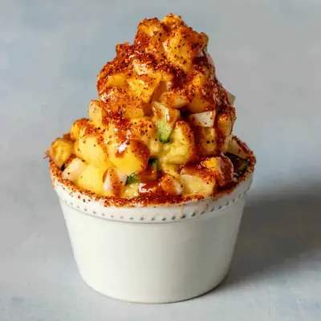

Disney Dole Whip Recipe

Ingredients
- 2 cups frozen pineapple (see note for creamier option)
- 4 tablespoons full fat coconut milk
- 1-2 tablespoons sweetener (optional, dry sugar works better for texture)
- Use 1 cup frozen pineapple and 1 cup frozen mango (see note for creamier option)
- Chopped pineapple
- Chopped cucumber
- Chopped jicama
- Chopped mango
- Chamoy syrup
- Tajin (or any chile lime seasoning)
- Dried mango slice
Steps
- Put frozen fruit into a blender.
- Pulse to chop into small pieces, you almost want it shredded. Make sure you pulse and not blend so that it doesn't get stuck.
- Add the milk.
- Blend or pulse on low while stopping to move the mixture around. If you have a vitamix, the tamper will work well for this. Do not blend on high or the heat will melt the mixture.
- Once it is the consistency of a thick frozen yogurt, pour into a bowl and serve! Top with Chile Mango toppings or any toppings you want!
Recipe by Anjali Shah, from The Picky Eater. Saved here for personal use; the original has the full notes, tips and photos. Open original